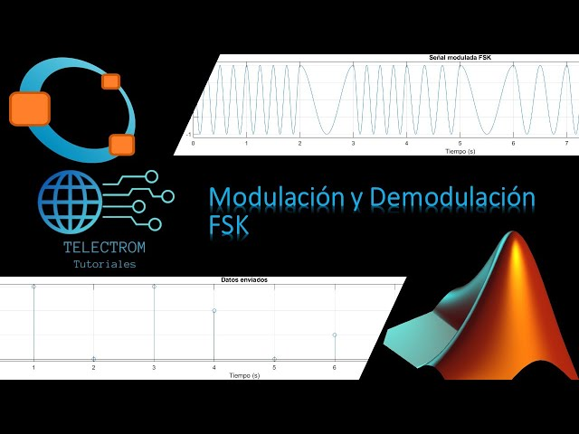
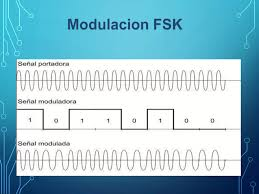

FSK utiliza diferentes frecuencias para representar bits digitales. Según Haykin, ofrece mayor resistencia al ruido que ASK.
En FSK, cada símbolo digital se asocia con una frecuencia distinta. Sklar explica que esta técnica es ampliamente utilizada en sistemas de baja velocidad y comunicaciones inalámbricas.


En conclusión, FSK es una técnica confiable, aunque menos eficiente en ancho de banda.